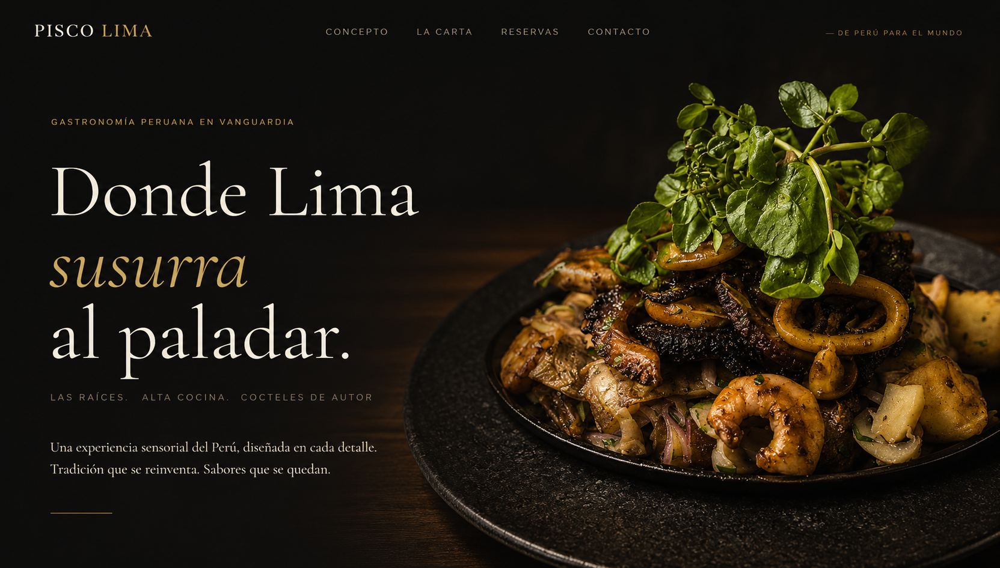
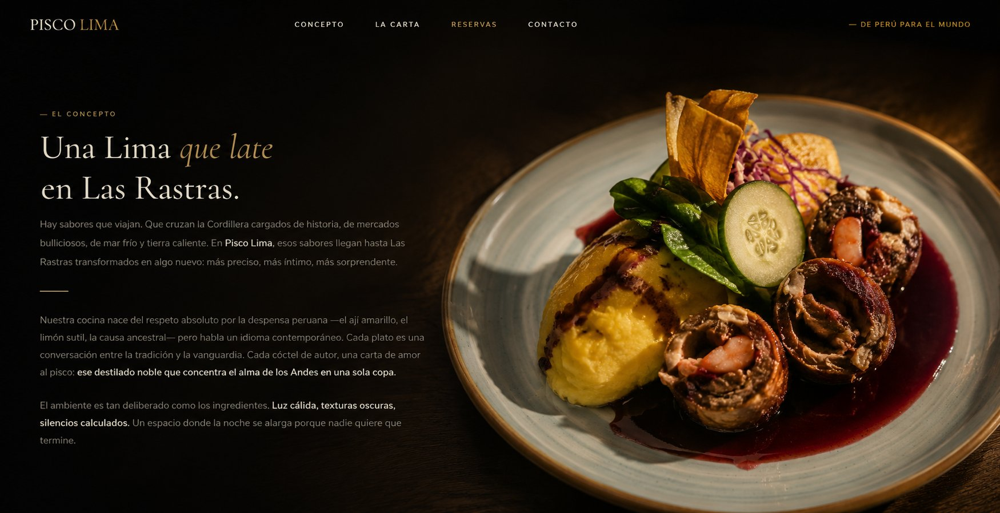

Gastronomía Peruana en Vanguardia
Las Raíces · Alta Cocina · Cocteles de Autor
Una experiencia sensorial del Perú, diseñada en cada detalle.
Tradición que se reinventa. Sabores que se quedan.

— De Perú para el Mundo— El Concepto
Hay sabores que viajan. Que cruzan la Cordillera cargados de historia, de mercados bulliciosos, de mar frío y tierra caliente. En Pisco Lima, esos sabores llegan hasta Las Rastras transformados en algo nuevo: más preciso, más íntimo, más sorprendente.
Nuestra cocina nace del respeto absoluto por la despensa peruana —el ají amarillo, el limón sutil, la causa ancestral— pero habla un idioma contemporáneo. Cada plato es una conversación entre la tradición y la vanguardia. Cada cóctel de autor, una carta de amor al pisco: ese destilado noble que concentra el alma de los Andes en una sola copa.
El ambiente es tan deliberado como los ingredientes. Luz cálida, texturas oscuras, silencios calculados. Un espacio donde la noche se alarga porque nadie quiere que termine.

— La Carta
— Vivir la Experiencia
Reserva tu mesa y permítete una noche que trasciende la cena. Ambiente diseñado, servicio de guante blanco, maridaje con coctelería de autor y una propuesta gastronómica que no encontrarás en ningún otro lugar de Las Rastras.
Disponibilidad limitada. Reservas para grupos privados, celebraciones y experiencias maridaje disponibles a consulta.
Porque la alta cocina no debería tener dirección fija. Nuestro servicio de delivery premium lleva los mismos platos de carta, envasados con el mismo cuidado con que los emplatamos en salón.
Horario delivery: Martes a Domingo, 13:00 – 22:00 hrs. Para pedidos especiales o eventos en casa, consúltanos.
— Encuéntranos